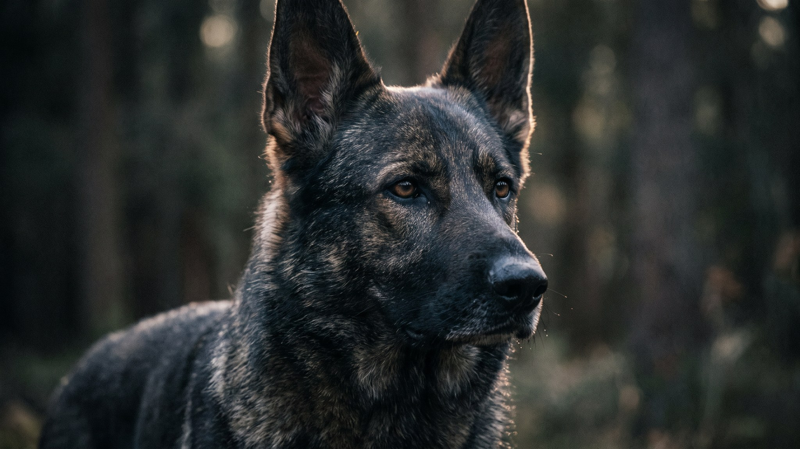

Немецкая овчарка способна за неделю выучить команду, на которую у другой собаки уйдёт месяц. И это же достоинство оборачивается проблемой: мозг, которому не дали задачу, находит её сам — лай на каждый шорох за дверью, «охрана» дивана, подкопы. Это не испорченный характер. Это рабочая порода без работы. Ниже — что за темпераментом стоит и как направить его так, чтобы в доме жил спокойный партнёр, а не вечный часовой.
🐾 Ваш питомец — немецкая овчарка?
Заведите профиль в AnimaLife: приложение запомнит породу, возраст и вес и будет подсказывать по уходу именно для неё. Вопросы AI-ветеринару — круглосуточно и бесплатно.
Завести профиль → Завести в MAX →
У вас iPhone? AnimaLife есть в App Store
Немецкая овчарка выводилась как рабочая порода — пасти, охранять, служить рядом с человеком. Отсюда три черты, которые никуда не денутся в домашней жизни:
Самый важный период — примерно до 16 недель. В эти недели щенок спокойно принимает новое: звуки города, лифт, другие собаки, гости, дети, машины. Что не показали вовремя — позже вызывает настороженность или страх, и переучивать придётся долго.
Знакомьте мягко и небольшими порциями: не бросать в толпу, а давать осваиваться в своём темпе, подкрепляя спокойствие. Цель — не «бесстрашная» собака, а уравновешенная, которая видит новое и не считает его угрозой.
Двух часов беготни мало, если голова не работала. Уставшая физически, но не умственно овчарка к вечеру снова ищет, чем заняться. Что действительно разряжает:
Овчарка линяет круглый год, а дважды в год — обильно. Вычёсывайте 2–3 раза в неделю, в сезон линьки — чаще; это снимает большую часть шерсти в доме. Крупная, быстро растущая порода: щенку вредны прыжки с высоты и долгие нагрузки, пока растут суставы. Следите за весом — лишние килограммы бьют по суставам первыми. И закладывайте время: это собака не «для галочки во дворе», а компаньон, которому нужно ваше участие каждый день.
🐾 У вас немецкая овчарка?
AnimaLife соберёт уход под породу: к каким болезням есть склонность, что проверять по возрасту, чем кормить и когда пора к врачу. Бесплатно, прямо в мессенджере.
Собрать план ухода → Собрать в MAX →
У вас iPhone? AnimaLife есть в App Store
🐾 Понравился разбор?
Подпишитесь на канал — каждый день разбираем по одному тревожному симптому у кошек и собак: что в пределах нормы, а когда пора к врачу. Подпишитесь, чтобы не пропустить разбор, который может спасти здоровье вашего питомца.
Материал носит информационный характер и не заменяет очную консультацию ветеринара.